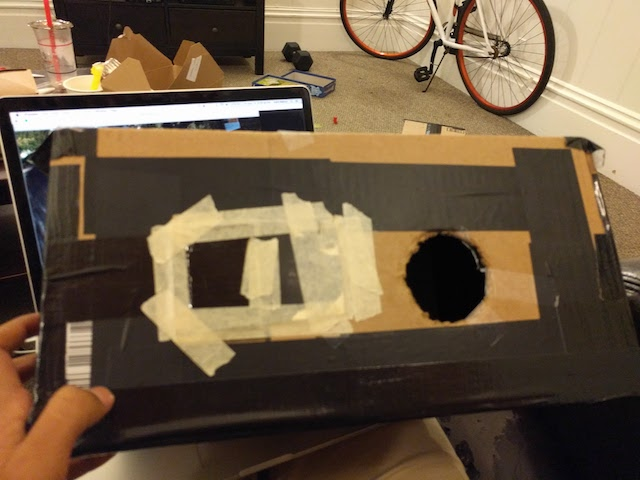

Building a Camera Obscura
by Anaga Rajan and Ankit Mathur
Overview
In this project, the goal was to build a camera obscura and use it to capture real world images. A camera obscura works by allowing rays through a small pinhole. Thus, they fall onto a screen and are captured by a long-exposure camera. These images are flipped upside down. This is because the light rays from an object below the pinhole must be drawn in a diagonal line through the pinhole and end up on top. Wr observe the differences when changing the parameters of the "experiment" (like the pinhole size, the exposure time, and aperture size).
Box Design
Box Design
Our box is a midsize Amazon box. We cut a larger hole in the right side of the box to put the camera in and a smaller hole to the left of it for the pinholes. We tilted the camera towards the pinhole so that our camera was capturing the right field of view.
We created the darkest possible environment inside the box by covering it with a thick, black tape. In addition to this, we bought heavy construction paper to cover inside walls of the box and parts of the outside box.
We use a white paper on the inside as the background.
We built 3 pinholes on separate black construction paper cards, and used masking tape to cover some of the black paper to further minimize light getting through the hole. We made a relatively larger hole so that we could swap in different pinholes.
Lessons Learned
Unfortunately, the first couple of times we tried to take pictures, we didn't realize that our camera was not focusing correctly. Therefore, we were confused why all the images we had were extremely blurry. However, once we realized that we needed to figure out a way to make the camera focus, we had a better time. We had to wrangle with the autofocus on my camera, since auto focus doesn't allow a picture capture if the scene is too dark. We ended up focusing on something a distance equal to the box width away, then switching to manual to make it so that the focus of the camera was the right length. Note that many of these images are cropped to crop out some white splotches that seemed to be a function of where the sun was.
Results
| 5mm | 3mm | 0.1mm |
|---|---|---|
|
Exposure time: 5s, f/stop: 4.4, ISO: 1600 |
Exposure time: 10s, f/stop: 4.4, ISO: 3200 |
Exposure time: 15s, f/stop: 4.4, ISO: 6400 |
|
Exposure time: 5s, f/stop: 4.4, ISO: 1600 |
Exposure time: 10s, f/stop: 4.4, ISO: 3200 |
Exposure time: 15s, f/stop: 4.4, ISO: 6400 |
Best Pinhole
1mm gave the best images for us. We computed the focal length that was supposed to give us the correct and this gave us an optimal focal length of approximately 0.07 mm (which we obviously could not obtain accurately). This lined up with our expectation that the 1mm would be the best approximation. This makes sense because the smaller the focal length, the more concentrated the rays of light will be (as opposed to washed out and spread out a little bit). The smaller pinhole did need a longer exposure time to work effectively though (which also lines up with our expectations). The 5mm hole emphasized this, as the images were bright but blurry (even with smaller exposure times). The 3mm hole was in the middle (bright, but still slightly blurry), so it was a good compromise if one needed shorter exposure times. Here are four more images with the 1mm pinhole:
Bells and Whistles
Light Painting
We decided to try to do some light painting experiments with both our pinhole camera and our actual camera. What we did was just move a light (preferably a flashlight) around in the field of view of the pinhole camera or normal camera and take a longer exposure image. The concept is super fun! Here is an image that we took with our pinhole camera (but had to crop:
And here are some images that we took with just our camera where we light painted last year:
Here's one from this year: